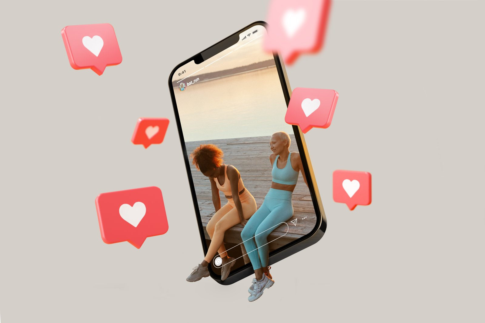

Site rápido vs. Instagram: por que o carregamento lento do seu link da bio está matando seus lucros

Ter um site para salao de beleza em Piraquara com carregamento instantâneo é o fator mais ignorado e que mais drena o faturamento de negócios de estética na nossa região. Enquanto a maioria dos proprietários foca exclusivamente em produzir posts e stories diários para o Instagram, o verdadeiro gargalo de vendas está no tempo que o cliente precisa esperar para conseguir agendar um horário depois de clicar no link da sua bio. Se a sua página de conversão demora mais de três segundos para abrir no celular, o seu cliente em potencial desiste e vai para o concorrente.
Eu trabalho com posicionamento e criação de sites em Piraquara e região metropolitana há mais de uma década, e cansei de ver salões de altíssimo nível, com profissionais premiados e serviços impecáveis, sofrendo para fechar a agenda simplesmente porque tratam a própria estrutura digital como um detalhe secundário. O Instagram é uma excelente ferramenta de atração, mas ele é apenas a vitrine; o fechamento precisa de um ambiente controlado, rápido e focado em conversão. Neste artigo, vou detalhar como a velocidade de carregamento afeta diretamente o lucro do seu salão e o que você precisa fazer para transformar o link da sua bio em uma máquina de agendamentos.
Por que depender apenas do direct do Instagram está limitando o faturamento do seu salão?
Depender exclusivamente do direct do Instagram ou do WhatsApp manual para fechar agendamentos cria uma barreira de atrito que faz seu salão de beleza perder até metade dos clientes interessados. Quando uma pessoa decide que quer fazer um procedimento estético, ela busca conveniência e agilidade; se ela precisa enviar uma mensagem, esperar horas por uma resposta comercial e negociar horários manualmente, a venda esfria. Uma landing page para salao de beleza elimina esse intermediário, permitindo que o cliente veja a disponibilidade e feche o agendamento em poucos segundos.
No meu processo de trabalho, eu sempre destaco que o consumidor moderno não quer conversar; ele quer resolver. Se o seu salão em Piraquara atende um público qualificado que trabalha o dia todo, o período em que essas pessoas têm tempo livre para agendar serviços é justamente à noite, quando a sua recepção já está fechada. Sem um sistema automatizado e rápido acessível pelo link da bio, você simplesmente deixa de vender para quem está pronto para comprar às 22h.
O Instagram é um terreno alugado. O algoritmo muda, o alcance orgânico cai e a atenção do usuário é disputada por centenas de notificações, concorrentes e memes. Quando você direciona o usuário para uma landing page estruturada especificamente para o seu salão, você passa a controlar a narrativa e foca 100% da atenção dele na sua proposta de valor, no seu portfólio e no botão de agendamento.
O ralo invisível: como um site lento perde cliente antes mesmo do primeiro clique
O carregamento lento de uma página gera uma frustração imediata que faz o usuário abandonar o site antes mesmo de ver o que você tem a oferecer. De acordo com dados do Google (Think with Google), se uma página no celular demora mais de três segundos para carregar, a probabilidade de o visitante abandoná-la aumenta em 32%; se chegar a cinco segundos, essa taxa de rejeição dispara para 90%. Para um salão de beleza, cada segundo de atraso representa uma cliente em potencial que desiste do agendamento.
Quando a pessoa clica no link da sua bio em Piraquara, ela geralmente está usando a rede móvel (3G ou 4G), que é naturalmente mais instável que o Wi-Fi residencial. Se o seu site não foi otimizado de forma profissional, com imagens excessivamente pesadas, códigos redundantes e servidores de baixa qualidade, a experiência de navegação se torna um pesadelo. O cliente simplesmente clica em voltar e procura outro salão que facilite a vida dele.
Para visualizar o impacto financeiro real que a lentidão causa no seu faturamento mensal, veja a tabela comparativa abaixo, baseada em comportamentos de consumo mapeados pelo mercado:
| Tempo de Carregamento | Taxa Média de Abandono | Impacto no Faturamento Estimado (R$ 10k potenciais) | Percepção de Marca do Cliente |
|---|---|---|---|
| Menos de 1.5 segundos | Menos de 5% | Perda insignificante (Faturamento flui livre) | Profissional, premium, confiável |
| 3 segundos | Cerca de 32% | Perda estimada de R$ 3.200,00 | Comum, aceitável mas sem destaque |
| 5 segundos | Cerca de 90% | Perda estimada de R$ 9.000,00 | Amador, desorganizado, lento |
| Mais de 8 segundos | Acima de 95% | Perda total de novos agendamentos via link | Frustrante, site quebrado |
Esses números deixam claro que o desenvolvimento de sites em Piraquara não pode ser tratado como um trabalho amador feito por ferramentas gratuitas de arrastar e soltar que entopem o código de lixo tecnológico. Velocidade é faturamento na conta bancária.
Landing page para salão de beleza em Piraquara: o que ela precisa ter para converter?
Uma landing page para salao de beleza em Piraquara de alta conversão precisa combinar um design visual sofisticado com uma estrutura técnica extremamente veloz, pensada exclusivamente para o público de dispositivos móveis. Ela deve responder imediatamente às principais dúvidas do cliente: quais serviços são oferecidos, qual é o padrão de qualidade (portfólio), onde o salão está localizado na cidade e como agendar. Qualquer elemento que não ajude a responder a essas perguntas de forma rápida deve ser descartado.
Na minha atuação prática em branding e web design, percebo que muitos salões tentam colocar todo o histórico da empresa, fotos imensas da equipe e efeitos visuais pesados na página inicial. Isso destrói a performance. Uma página focada em resultados precisa de direcionamento claro. O design precisa guiar os olhos do visitante diretamente para o botão de agendamento (CTA), usando uma hierarquia visual limpa e elegante.
Mobile-first design: por que seu cliente agenda pelo celular
A esmagadora maioria das pessoas (mais de 90%, conforme dados de tráfego que analiso nos meus projetos) acessa as páginas de salões de beleza através de dispositivos móveis. Se o seu site foi desenhado pensando apenas na tela do computador e apenas adaptado para o celular, a usabilidade será prejudicada. Botões muito pequenos, textos difíceis de ler e imagens fora de enquadramento fazem o cliente desistir da ação.
Como carregar site mais rápido: a anatomia técnica de uma página de alta performance
Para fazer um site carregar de forma quase instantânea no celular do seu cliente, é necessário aplicar uma série de otimizações técnicas severas que vão desde a escolha da hospedagem até a compressão de cada elemento visual. Não basta apenas que a página seja bonita; a engenharia por trás do código precisa ser limpa, moderna e otimizada para os critérios do Google (Core Web Vitals). Como designer de marcas e estrategista de comunicação, eu trabalho unindo a estética premium à performance técnica de ponta.
Se você deseja entender na prática como carregar site mais rápido, existem etapas fundamentais que eu sigo no desenvolvimento de cada projeto para garantir que o link da bio do seu salão carregue em menos de 2 segundos:
- Otimização de imagens: Converter todas as fotos de cabelos, unhas e maquiagens do salão para formatos modernos como WebP, reduzindo o tamanho do arquivo em até 80% sem perder qualidade visual.
- Eliminação de código inútil: Limpar folhas de estilo (CSS) e scripts de animação desnecessários que atrasam a renderização da página no navegador do celular.
- Uso de redes de distribuição de conteúdo (CDN): Hospedar os arquivos do site em servidores distribuídos geograficamente, garantindo que o carregamento em Piraquara ou Curitiba seja imediato.
- Lazy Loading inteligente: Configurar o site para carregar primeiro apenas o topo da página (o que o usuário vê primeiro) e deixar para carregar as fotos de baixo conforme ele rola a tela.
- Hospedagem profissional de alta performance: Evitar hospedagens compartilhadas baratas e instáveis, optando por servidores dedicados ou em nuvem configurados especificamente para velocidade.
Implementando esses passos, o site do seu salão de beleza deixa de ser um peso lento no navegador e passa a abrir instantaneamente, convertendo a curiosidade do clique no Instagram em faturamento real.
Web design em Piraquara: a diferença entre um site 'bonitinho' e um que gera agendamentos reais
A diferença entre um web design em Piraquara feito de forma estratégica por um especialista e um site genérico de plataforma de templates está no entendimento profundo do comportamento do seu consumidor local. Um site 'bonitinho' foca apenas na estética superficial; um site estratégico foca em remover as objeções do cliente e direcioná-lo para a ação de compra mais rápida possível, sem distrações.
Eu trago na bagagem mais de 10 anos de estrada, formação acadêmica em Publicidade pela UniBrasil e passagem pelo BNI na cadeira de Branding. Esse background me ensinou que design sem estratégia é apenas decoração barata. No meu trabalho, antes de desenhar qualquer linha de código para um salão de beleza, eu analiso o seu público-alvo, os seus serviços mais lucrativos e a concorrência na região de Piraquara e Curitiba. O objetivo é criar um posicionamento forte, como fiz para marcas como a Miraculuz Confeitaria no seu lançamento, garantindo que a comunicação visual transmita o valor real do seu serviço.
Se você cobra um valor premium pelos seus serviços de beleza, a sua presença digital precisa refletir essa mesma qualidade. Um site lento, desalinhado ou que apresenta erros de carregamento passa a mensagem de que o seu salão também é desorganizado e descuidado nos procedimentos reais.
Para ajudar a entender as diferenças de abordagem, preparei um comparativo prático:
| Critério de Avaliação | Ferramentas Gratuitas / DIY (Linktree, Wix) | Landing Page Estratégica (Eros Gomes) |
|---|---|---|
| Velocidade de Carregamento | Muito lenta (cheia de scripts pesados e genéricos) | Ultra-rápida (menos de 2 segundos, código limpo) |
| Identidade e Posicionamento | Padronizada, igual a todos os concorrentes | Exclusiva, desenhada para destacar o seu salão |
| Foco em Conversão | Distrai o cliente com múltiplos botões e redes | Direciona o cliente para o agendamento sem desvios |
| Otimização para SEO Local | Inexistente ou muito fraca para buscas na região | Otimizada para destacar o salão no Google em Piraquara |
| Suporte e Evolução | Você precisa descobrir tudo e resolver sozinho | Acompanhamento profissional e estratégico contínuo |
Investir em uma estrutura profissional de web design em Piraquara é o caminho mais rápido para parar de competir por preço baixo e começar a atrair clientes que valorizam o seu trabalho e pagam o que ele realmente vale.
Perguntas frequentes
Por que o Instagram não é suficiente para o meu salão de beleza em Piraquara?
O Instagram serve para atração e engajamento, mas ele não oferece uma estrutura otimizada para fechamento de vendas. Um site próprio e rápido elimina as distrações das redes sociais, automatiza os agendamentos e garante que o seu negócio mantenha um canal de vendas ativo 24 horas por dia, sem depender da flutuação de algoritmos.
O que é uma landing page para salão de beleza e como ela funciona?
Uma landing page é uma página única de alta conversão projetada para guiar o visitante a realizar uma única ação específica: agendar um horário no seu salão. Ela apresenta seus melhores serviços, fotos do seu espaço, depoimentos de clientes satisfeitos e um botão de ação direto para o seu sistema de agendamento ou WhatsApp, tudo de forma muito rápida e sem caminhos confusos.
Quanto tempo meu site deve demorar para carregar no celular do cliente?
O ideal recomendado pelo Google e por especialistas em experiência do usuário (como o Nielsen Norman Group) é que a página carregue completamente em menos de 2 segundos. Qualquer tempo acima de 3 segundos aumenta drasticamente as taxas de abandono, fazendo com que você perca clientes qualificados para a concorrência local.
Eu preciso contratar uma hospedagem cara para ter um site rápido?
Não necessariamente cara, mas sim uma hospedagem profissional de alta performance e bem configurada. Muitas vezes, o problema de lentidão não está apenas na hospedagem em si, mas sim na falta de otimização do código, imagens pesadas e excesso de plugins desnecessários instalados no site.
Como posso testar a velocidade atual do link da minha bio?
Você pode utilizar ferramentas gratuitas e amplamente reconhecidas no mercado, como o Google PageSpeed Insights ou o GTmetrix. Basta inserir o endereço do seu site para receber um relatório detalhado sobre o tempo de carregamento no celular e no computador, além de uma lista de melhorias técnicas necessárias.
Conclusão: pare de perder clientes no último segundo
No final das contas, de nada adianta investir horas produzindo conteúdo impecável para o Instagram se o seu link da bio joga o cliente interessado em um ralo de lentidão e frustração. A velocidade de carregamento é a ponte que conecta o desejo de compra do seu público ao faturamento real do seu caixa. Se essa ponte está quebrada ou lenta demais para atravessar, a sua cliente em potencial vai simplesmente dar meia-volta e agendar com o salão vizinho que oferece um acesso mais rápido e prático.
Se você percebe que o seu salão de beleza em Piraquara ou região metropolitana é extremamente competente nos serviços que entrega, mas a sua comunicação digital ainda parece amadora e lenta, está na hora de mudar esse cenário. Eu posso ajudar a estruturar um design de alta performance focado em trazer resultados reais para o seu negócio.
Que tal parar de perder agendamentos por causa de um site lento? Entre em contato comigo pelo WhatsApp (41) 98812-2525 ou acesse meu site em erosgomes.com.br para conversarmos sobre como transformar o posicionamento digital do seu salão em uma máquina de conversão.